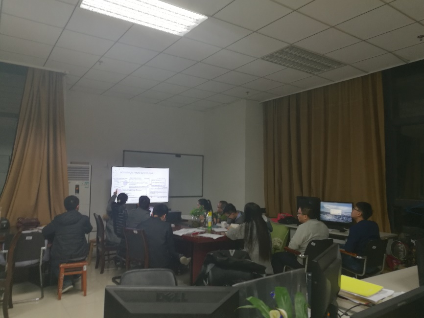
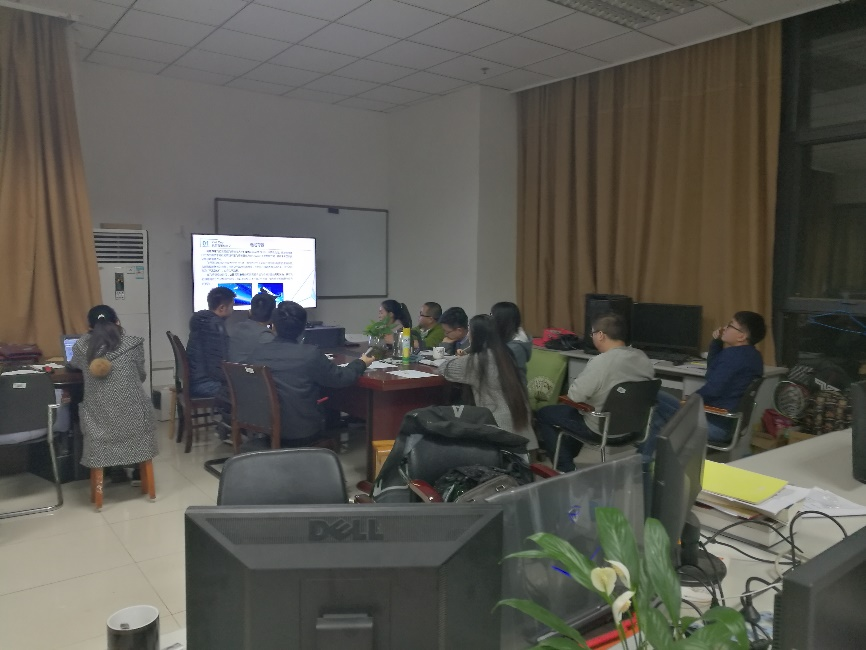

时间 | |
地点 | 东九2-42 |
参加人员 （11人） | 闫博文、唐怡、冯姣、骆蓉、张弛名、罗国婷、蒙小龙、蔡文杰、刘欢、李光伟、罗斐 |
缺席（1人） | 韩君君 |
主持人 | 黄俊 |
1. 个人总结 1) 闫博文：气动项目代码调整； 2) 张弛名：上课，论文总结； 3) 唐怡：看论文，调整修正页面； 4) 冯姣：看论文，调整项目管理页面； 5) 骆蓉：看论文，代码调整； 6) 罗国婷： 看文献，网上学习； 7) 蒙小龙：写程序，附着线提取； 8) 李光伟：找工作； 9) 罗斐：考试（教师资格证）； 10) 刘欢：找工作； 11) 蔡文杰：写作业。
2. 冯姣做分享: J-Force: Forced Execution on JavaScript； 蒙小龙做分享：复杂外形飞行器表面流线拓扑与热环境预测。 3. 照片  
| |